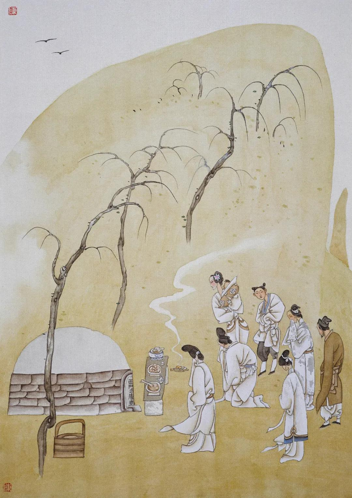

第八十九回 清明节寡妇上新坟 永福寺夫人逢故主#
词曰：
佳人命薄，叹艳代红粉，几多黄土。岂是老天浑不管，好恶随人自取？
既赋娇容，又全慧性，却遣轻归去。不平如此，问天天更不语。
可惜国色天香，随时飞谢，埋没今如许。借问繁华何处在？
多少楼台歌舞，紫陌春游，绿窗晚秀，姊妹娇眉妩。人生失意，从来无问今古。
右调《翠楼吟》
话说月娘次日备了一张桌，并冥纸尺头之类，大姐身穿孝服，坐轿子，先叫薛嫂押祭礼，到陈宅来。只见陈敬济正在门首站立，便问：“是那里的？”薛嫂道了万福，说：“姐夫，你休推不知。你丈母家来与你爹烧纸，送大姐来了。”敬济便道：“我鸡巴肏的才是丈母！正月十六贴门神－－来迟了半个月。人也入了土，才来上祭。”薛嫂道：“好姐夫，你丈母说，寡妇家没脚蟹，不知亲家灵柩来家，迟了一步，休怪。”正说着，只见大姐轿子落在门首。敬济问：“是谁？”薛嫂道：“再有谁？你丈母心内不好，一者送大姐来家，二者敬与你爹烧纸。”敬济骂道：“趁早把淫妇抬回去！好的死了万万千千，我要他做甚么？”薛嫂道：“常言道：嫁夫着主。怎的说这个话？”敬济道：“我不要这淫妇了，还不与我走？”那抬轿的只顾站立不动，被敬济向前踢了两脚，骂道：“还不与我抬了去，我把你花子脚砸折了，把淫妇鬓毛都蒿净了！”那抬轿子的见他踢起来，只得抬轿子往家中走不迭。比及薛嫂叫出他娘张氏来，轿子已抬去了。
薛嫂儿没奈何，教张氏收下祭礼，走来回覆吴月娘。把吴月娘气的一个发昏，说道：“恁个没天理的短命囚根子！当初你家为了官事，搬来丈人家居住，养活了这几年，今日反恩将仇报起来了。只恨死鬼当初揽的好货在家里，弄出事来，到今日教我做臭老鼠，教他这等放屁辣臊。”对着大姐说：“孩儿，你是眼见的，丈人、丈母那些儿亏了他来？你活是他家人，死是他家鬼，我家里也留以留你。你明日还去，休要怕他，料他挟你不到井里。他好胆子，恒是杀不了人，难道世间没王法管他也怎的！”当晚不题。
到次日，一顶轿子，教玳安儿跟随着，把大姐又送到陈敬济家来。不想陈敬济不在家，往坟上替他父亲添土叠山子去了。张氏知礼，把大姐留下，对着玳安说：“大官到家多多上覆亲家，多谢祭礼，休要和他一般见识。他昨日已有酒了，故此这般。等我慢慢说他。”一面管待玳安儿，安抚来家。
至晚，陈敬济坟上回来，看见了大姐，就行踢打，骂道：“淫妇，你又来做甚么？还说我在你家雌饭吃，你家收着俺许多箱笼，因起这大产业，不道的白养活了女婿！好的死了万千，我要你这淫妇做甚？”大姐亦骂：“没廉耻的囚根子！没天理的囚根子！淫妇出去吃人杀了，没的禁拿我煞气。”被敬济扯过头发，尽力打了几拳头。他娘走来解劝，把他娘推了一交。他娘叫骂哭喊，说：“好囚根子，红了眼，把我也不认的了！”到晚上，一顶轿子，把大姐又送将来，分付道：“不讨将寄放妆奁箱笼来家，我把你这淫妇活杀了。”这大姐害怕，躲在家中居住，再不敢去了。这正是：谁知好事多更变，一念翻成怨恨媒。这里不去。不题。

且说一日，三月清明佳节。吴月娘备办香烛、金钱冥纸、三牲祭物，抬了两大食盒，要往城外坟上与西门庆上新坟祭扫。留下孙雪娥和大姐、众丫头看家。带了孟玉楼和小玉，并奶子如意儿抱着孝哥儿，都坐轿子往坟上去。又请了吴大舅和大妗子二人同去。出了城门，只见那郊原野旷，景物芳菲，花红柳绿，仕女游人不断。一年四季，无过春天，最好景致。日谓之丽日，风谓之和风，吹柳眼，绽花心，拂香尘。天色暖，谓之暄。天色寒，谓之料峭。骑的马，谓之宝马。坐的轿，谓之香车。行的路，谓之芳径。地下飞的尘，谓之香尘。千花发蕊，万草生芽，谓之春信。韶光淡荡，淑景融和。小桃深妆脸妖娆，嫩柳袅宫腰细腻。百转黄鹂惊回午梦，数声紫燕说破春愁。日舒长暖澡鹅黄，水渺茫浮香鸭绿。隔水不知谁院落，秋千高挂绿杨烟。端的春景果然是好。有诗为证：
清明何处不生烟，郊外微风挂纸钱。人笑人歌芳草地，乍晴乍雨杏花天。
海棠枝上绵莺语，杨柳堤边醉客眠。红粉佳人争画板，彩绳摇拽学飞仙。
吴月娘等轿子到五里原坟上，玳安押着食盒，先到厨下生起火来，厨役落作整理不题。月娘与玉楼、小玉、奶子如意儿抱着孝哥儿，到于庄院客坐内坐下吃茶，等着吴大妗子，不见到。玳安向西门庆坟上祭台儿，摆设桌面三牲，羹饭祭物，列下纸钱，只等吴大妗子。原来大妗子雇不出轿子来，约已牌时分，才同吴大舅雇了两个驴儿骑将来。月娘便说：“大妗子雇不出轿子来，这驴儿怎的骑？”一面吃了茶，换了衣服，同来西门庆坟上祭扫。那月娘手拈着五根香，自拿一根，递一根与玉楼，又递一根与奶子如意儿替孝哥上，那两根递与吴大舅、大妗子。月娘插在香炉内，深深拜下去，说道：“我的哥哥，你活时为人，死后为神。今日三月清明佳节，你的孝妻吴氏三姐、孟三姐和你周岁孩童孝哥儿，敬来与你坟前烧一陌钱纸。你保佑他长命百岁，替你做坟前拜扫之人。我的哥哥，我和你做夫妻一场，想起你那模样儿并说的话来，是好伤感人也。”拜毕，掩面痛哭。玉楼向前插上香，也深深拜下，同月娘大哭了一场。玉楼上了香，奶子如意儿抱着哥儿也跪下上香，磕了头。吴大舅、大妗子都炷了香。行毕礼数，玳安把钱纸烧了。让到庄上卷棚内，放桌席摆饭，收拾饮酒。月娘让吴大舅、大妗子上坐。月娘与玉楼下陪。小玉和奶子如意儿，同大妗子家使的老姐兰花，也在两边打横列坐，把酒来斟。按下这里吃酒不题。
却表那日周守备府里也上坟。先是春梅隔夜和守备睡，假推做梦，睡梦中哭醒了。守备慌的问：“你怎的哭？”春梅便说：“我梦见我娘向我哭泣，说养我一场，怎地不与他清明寒食烧纸，因此哭醒了。”守备道：“这个也是养女一场，你的一点孝心。不知你娘坟在何处？”春梅道：“在南门外永福寺后面便是。”守备说：“不打紧，永福寺是我家香火院，明日咱家上坟，你叫伴当抬些祭物，往那里与你娘烧分纸钱，也是好处。”至次日，守备令家人收拾食盒酒果祭品，径往城南祖坟上。那里有大庄院、厅堂、花园、享堂、祭台。大奶奶、孙二娘并春梅，都坐四人轿，排军喝路，上坟耍子去了。
却说吴月娘和大舅、大妗子吃了回酒，恐怕晚来，分付玳安、来安儿收拾了食盒酒果，先往杏花村酒楼下，拣高阜去处，人烟热闹，那里设放桌席等候。又见大妗子没轿子，都把轿子抬着，后面跟随不坐，领定一簇男女，吴大舅牵着驴儿，压后同行，踏青游玩。三月桃花店，五里杏花村，只见那随路上坟游玩的王孙士女，花红柳绿，闹闹喧喧，不知有多少。正走之间，也是合当有事，远远望见绿槐影里，一座庵院，盖造得十分齐整。但见：
山门高耸，梵宇清幽。当头敕额字分明，两下金刚形势猛。五间大殿，龙鳞瓦砌碧成行；两下僧房，龟背磨砖花嵌缝。前殿塑风调雨顺，后殿供过去未来。钟鼓楼森立，藏经阁巍峨。旗竿高峻接青云，宝塔依稀侵碧汉。木鱼横挂，云板高悬。佛前灯烛莹煌，炉内香烟缭绕。幢旗不断，观音殿接祖师堂；宝盖相连，鬼母位通罗汉殿。时时护法诸天降，岁岁降魔尊者来。
吴月娘便问：“这座寺叫做甚么寺？”吴大舅便说：“此是周秀老爷香火院，名唤永福禅林。前日姐夫在日，曾舍几拾两银子在这寺中，重修佛殿，方是这般新鲜。”月娘向大妗子说：“咱也到这寺里看一看。”于是领着一簇男女，进入寺中来。不一时，小沙弥看见，报与长老知道：“见有许多男女……”便出方丈来迎请，见了吴大舅、吴月娘，向前合掌道了问讯，连忙唤小和尚开了佛殿：“请施主菩萨随喜游玩，小僧看茶。”那小沙弥开了殿门，领月娘一簇男女，前后两廊参拜观看了一回，然后到长老方丈。长老连忙点上茶来，吴大舅请问长老道号，那和尚答说：“小僧法名道坚。这寺是恩主帅府周爷香火院，小僧忝在本寺长老，廊下管百十众僧行，后边禅堂中还有许多云游僧行，常时坐禅，与四方檀越答报功德。”一面方丈中摆斋，让月娘：“众菩萨请坐。”月娘道：“不当打搅长老宝刹。”一面拿出五钱银子，教大舅递与长老，佛前请香烧。那和尚打问讯谢了，说道：“小僧无甚管待，施主菩萨稍坐，略备一茶而已，何劳费心赐与布施。”不一时，小和尚放下桌儿，拿上素菜斋食饼馓上来。那和尚在旁陪坐，才举箸儿让众人吃时，忽见两个青衣汉子，走的气喘吁吁，暴雷也一般报与长老，说道：“长老还不快出来迎接，府中小奶奶来祭祀来了！”慌的长老披袈裟，戴僧帽不迭，分付小沙弥连忙收了家活，“请列位菩萨且在小房避避，打发小夫人烧了纸，祭毕去了，再款坐一会不迟。”吴大舅告辞，和尚死活留住，又不肯放。
那和尚慌的鸣起钟鼓来，出山门迎接，远远在马道口上等候。只见一族青衣人，围着一乘大轿，从东云飞般来，轿夫走的个个汗流满面，衣衫皆湿。那长老躬身合掌说道：“小僧不知小奶奶前来，理合远接，接待迟了，万勿见罪。”这春梅在轿内答道：“起动长老。”那手下伴当，又早向寺后金莲坟上，忙将祭桌纸钱来摆设下。春梅轿子来到，也不到寺，径入寺后白杨树下金莲坟前下轿。两边青衣人伺候。这春梅不慌不忙，来到坟前，摆了香，拜了四拜，说道：“我的娘，今日庞大姐特来与你烧陌纸钱，你好处升天，苦处用钱。早知你死在仇人之手，奴随问怎的也娶来府中，和奴做一处。还是奴耽误了你，悔已是迟了。”说毕，令左右把钱纸烧了。这春梅向前放声大哭不已。
吴月娘在僧房内，只知有宅内小夫人来到，长老出山门迎接，又不见进来。问小和尚，小和尚说：“这寺后有小奶奶的一个姐姐，新近葬下，今日清明节，特来祭扫烧纸。”孟玉楼便道：“怕不就是春梅来了？也不见的。”月娘道：“他那得个姐来死了葬在此处？”又问小和尚：“这府里小夫人姓甚么？”小和尚道：“姓庞，前日与了长老四五两经钱，教替他姐姐念经，荐拔生天。”玉楼道：“我听见他爹说春梅娘家姓庞，叫庞大姐，莫不是他？”正说话，只见长老先来，分付小沙弥：“好看好茶。”不一时，轿子抬进方丈二门里才下。月娘和玉楼众人打僧房帘内望外张看，怎样的小夫人。定睛仔细看时，却是春梅。但比昔时出落得长大身材，面如满月，打扮的粉妆玉琢，头上戴着冠儿，珠翠堆满，凤钗半卸，上穿大红妆花袄，下着翠兰缕金宽斓裙子，带着丁当禁步，比昔不同许多。但见：
宝髻巍峨，凤钗半卸。胡珠环耳边低挂，金挑凤鬓后双拖。红绣袄偏衬玉香肌，翠纹裙下映金莲小。行动处，胸前摇响玉丁当；坐下时，一阵麝兰香喷鼻。腻粉妆成脖颈，花钿巧帖眉尖。举止惊人，貌比幽花殊丽；姿容闲雅，性如兰蕙温柔。若非绮阁生成，定是兰房长就。俨若紫府琼姬离碧汉，宛如蕊宫仙子下尘寰。
那长老上面独独安放一张公座椅儿，让春梅坐下。长老参见已毕，小沙弥拿上茶来。长老递茶上去，说道：“今日小僧不知小奶奶来这里祭祀，有失迎接，万望恕罪。”春梅道：“外日多有起动长老诵经追荐。”那和尚说：“小僧岂敢。有甚殷勤补报恩主？多蒙小奶奶赐了许多钱衬施。小僧请了八众禅僧，整做道场，看经礼忏一日。晚夕，又与他老人家装些厢库焚化。道场圆满，才打发两位管家进城，宅里回小奶奶话。”春梅吃了茶，小和尚接下钟盏来。长老只顾在旁一递一句与春梅说话，把吴月娘众人拦阻在内，又不好出来的。
月娘恐怕天晚，使小和尚请下长老来，要起身。那长老又不肯放，走来方丈禀春梅说：“小僧有件事禀知小奶奶。”春梅道：“长老有话，但说无妨。”长老道：“适间有几位游玩娘子，在寺中随喜，不知小奶奶来。如今他要回去，未知小奶奶尊意如何。”春梅道：“长老何不请来相见。”那长老慌的来请。吴月娘又不肯出来，只说：“长老不见罢。天色晚了，俺们告辞去了。”长老见收了他布施，又没管待，又意不过，只顾再三催促。吴月娘与孟玉楼、吴大妗子推阻不过，只得出来，春梅一见便道：“原来是二位娘与大妗子。”于是先让大妗子转上，花枝招展磕下头去。慌的大妗子还礼不迭，说道：“姐姐，今非昔比，折杀老身。”春梅道：“好大妗子，如何说这话，奴不是那样人。尊卑上下，自然之礼。”拜了大妗子，然后向月娘、孟玉楼插烛也似磕头。月娘、玉楼亦欲还礼，春梅那里肯，扶起，磕下四个头，说：“不知是娘们在这里，早知也请出来相见。”月娘道：“姐姐，你自从出了家门在府中，一向奴多缺礼，没曾看你，你休怪。”春梅道：“好奶奶，奴那里出身，岂敢说怪。”因见奶子如意儿抱着孝哥儿，说道：“哥哥也长的恁大了。”月娘说：“你和小玉过来，与姐姐磕过头儿。”那如意儿和小玉二人笑嘻嘻过来，亦与春梅都平磕了头。月娘道：“姐姐，你受他两个一礼儿。”春梅向头上拔下一对金头银簪儿来，插在孝哥儿帽儿上。月娘说：“多谢姐姐簪儿，还不与姐姐唱个喏儿。”如意儿抱着哥儿，真个与春梅唱个喏，把月娘喜欢的要不得。玉楼道：“姐姐，你今日不到寺中，咱娘儿们怎得遇在一处相见。”春梅道：“便是因俺娘他老人家新埋葬在这寺后，奴在他手里一场，他又无亲无故，奴不记挂着替他烧张纸儿，怎生过得去。”月娘道：“我记的你娘没了好几年，不知葬在这里。”孟玉楼道：“大娘还不知庞大姐说话，说的是潘六姐死了。多亏姐姐，如今把他埋在这里。”月娘听了，就不言语了。吴大妗子道：“谁似姐姐这等有恩，不肯忘旧，还葬埋了。你逢节令题念他，来替他烧钱化纸。”春梅道：“好奶奶，想着他怎生抬举我来！今日他死的苦，这般抛露丢下，怎不埋葬他？”说毕，长老教小和尚放桌儿，摆斋上来。两张大八仙桌子，蒸酥点心，各样素馔菜蔬，堆满春台，绝细春芽雀舌甜水好茶。众人吃了，收下家活去。吴大舅自有僧房管待，不在话下。
孟玉楼起身，心里要往金莲坟上看看，替他烧张纸，也是姊妹一场。见月娘不动身，拿出五分银子，教小沙弥买纸去。长老道：“娘子不消买去，我这里有金银纸，拿几分烧去。”玉楼把银子递与长老，使小沙弥领到后边白杨树下金莲坟上，见三尺坟堆，一堆黄土，数柳青蒿。上了根香，把纸钱点着，拜了一拜，说道：“六姐，不知你埋在这里。今日孟三姐误到寺中，与你烧陌钱纸，你好处升天，苦处用钱。”一面放声大哭。那奶子如意儿见玉楼往后边，也抱了孝哥儿来看一看。月娘在方丈内和春梅说话，教奶子休抱了孩子去，只怕唬了他。如意儿道：“奶奶，不妨事，我知道。”径抱到坟上，看玉楼烧纸哭罢回来。
春梅和月娘匀了脸，换了衣裳，分付小伴当将食盒打开，将各样细果甜食，肴品点心攒盒，摆下两桌子，布甑内筛上酒来，银钟牙箸，请大妗子、月娘、玉楼上坐，他便主位相陪。奶子、小玉，都在两边打横。吴大舅另放一张桌子在僧房内。正饮酒中间，忽见两个青衣伴当走来，跪下禀道：“老爷在新庄，差小的来请小奶奶看杂耍调百戏的。大奶奶、二奶奶都去了，请奶奶快去哩。”这春梅不慌不忙，说：“你回去，知道了。”那二人应诺下来，又不敢去，在下边等候。大妗子、月娘便要起身，说：“姐姐，不可打搅。天色晚了，你也有事，俺们去罢。”那春梅那里肯放，只顾令左右将大钟来劝道：“咱娘儿们会少离多，彼此都见长着，休要断了这门亲路。奴也没亲没故，到明日娘的好日子，奴往家里走走去。”月娘道：“我的姐姐，说一声儿就勾了，怎敢起动你？容一日，奴去看姐姐去。”饮过一杯，月娘说：“我酒勾了，你大妗子没轿子，十分晚了，不好行的。”春梅道：“大妗子没轿子，我这里有跟随小马儿，拨一匹与妗子骑，关了家去。”大妗子再三不肯，辞了，方一面收拾起身。春梅叫过长老来，令小伴当拿出一匹大布、五钱银子与长老。长老拜谢了，送出山门。春梅与月娘拜别，看着月娘、玉楼众人上了轿子，他也坐轿子，两下分路，一簇人明随喝道，往新庄上去了。正是：
树叶还有相逢时，岂可人无得运时。